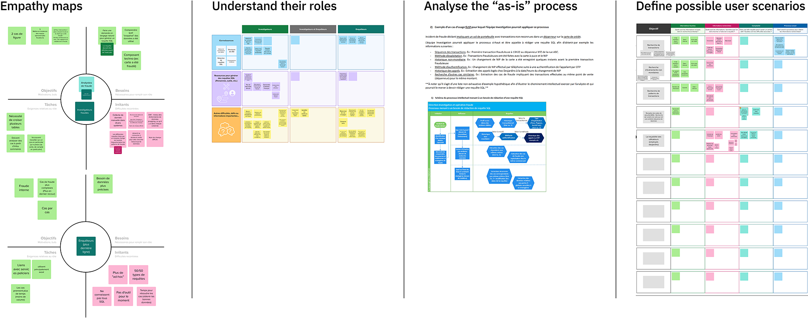

Generative AI SQL tool
for fraud investigators
An SQL-generating assistant aimed at helping
financial investigators identify fraud patterns.

Summary
This project focused on designing a proof of concept for a generative AI-powered SQL assistant tailored to fraud investigators at a major Canadian financial institution. These investigators, who are often not SQL experts, need to quickly query databases to detect fraud patterns. The resulting solution improved their workflow by enabling natural language inputs to generate SQL queries, effectively demonstrating the potential of IBM’s generative AI technologies.
My Role
Designing and facilitating client and internal workshops, aligning cross-functional teams around a user-centered solution, and leading the design (UX/UI) and delivery of a working prototype presented to senior client stakeholders
Tools
Mural, Figma, monday.com, watsonx.ai (genarative AI studio), Adobe Creative Cloud, Microsoft 365, Slack
Context & Brief
The technical discovery phase was conducted in close collaboration with a solution architect to assess the client’s existing systems, data architecture, and integration possibilities. This partnership made it possible to lead a focused exploration of the technical environment, identifying relevant constraints and opportunities. Understanding the technologies in use and the types of data available informed key design decisions and helped define a feasible, aligned scope for the proof of concept.
Research & discover the use case
Discover generative AI use cases
Initial discovery workshops with stakeholders helped identify and prioritize possible use cases. Through structured activities, participants defined goals, pain points, and existing tools. The chosen use case focused on assisting fraud investigators in writing SQL queries using natural language, a task that was time-consuming and complex under current workflows.
Research the stakeholders
A follow-up workshop directly engaged fraud investigators to map roles, document their investigative process, and understand their challenges. Activities included empathy mapping and scenario development to contextualize user needs and identify areas for improvement. Due to limited time with the investigators, careful planning was required to maximize insights. Specific activities were selected and crafted to efficiently gather the most relevant information about user goals, workflows, and pain points within the constraints of the session.
Technical discovery
The technical discovery phase was conducted in close collaboration with a solution architect to assess the client’s existing systems, data architecture, and integration possibilities. This partnership made it possible to lead a focused exploration of the technical environment, identifying relevant constraints and opportunities. Understanding the technologies in use and the types of data available informed key design decisions and helped define a feasible, aligned scope for the proof of concept.
{kind=link}
{kind=link}
Design & scope the solution
Solutioning
Once the problem was clearly defined, the future user experience was mapped in collaboration with technical and business stakeholders. Key touchpoints were identified where generative AI could provide value. User journey mapping and experience flows were iteratively refined and validated with internal and client teams.
Scoping
Given the tight development timeline, the scope was refined to focus on features that would deliver the highest impact within constraints. Success criteria were aligned with the client to ensure the solution addressed both technical and user experience requirements.
Co-create the solution
Design the prototype
The design process began with research into the client’s existing tools and branding. A prototype was created in Figma, with a focus on essential features that enhanced usability and transparency. The design emphasized explainability by helping users understand how queries were generated and how to refine them. Iterative feedback from fraud investigators informed refinements such as the addition of loading animations and better visibility on each back-end phases required to generate the SQL query.
Build the proof of concept
The prototype was developed using an agile methodology. User stories guided development, with daily standups and weekly playback sessions used to track progress and resolve blockers. Regular communication ensured the design vision was accurately translated into the working prototype, and adjustments were made based on technical constraints and user feedback.
Present & deliver the proof of concept
Project delivery & outcomes
Following completion of the prototype, the team prepared the client’s fraud investigators to deliver a live demo to senior executives. The walkthrough received strong positive feedback. The project succeeded in demonstrating value and is currently pending further decisions related to enterprise licensing.
Learnings
The project highlighted the importance of earlier and deeper engagement with end-users. While initial workshops provided valuable insights, additional usability testing and iteration could have enhanced the solution further. Nevertheless, the proof of concept went beyond expectations by moving from a basic chatbot idea to a tailored user experience that prioritized transparency, usability, and investigator empowerment.